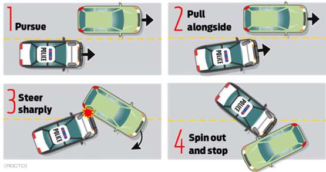

LOS SANTOS POLICE DEPARTMENT
Milo Hale
ROOKIE
Badge #71503Selamat datang di Kepolisian Los Santos. Handbook ini adalah panduan lapangan Anda. Pelajari 10-Codes, pahami rantai komando, dan ingat tanggung jawab Anda di lapangan. Lencana yang Anda kenakan adalah simbol kepercayaan kota ini. Bertugaslah dengan integritas, ketegasan, dan keselamatan.
Chain of Command
LOS SANTOS POLICE DEPARTMENT OFFICIAL STRUCTURE & PERSONNEL ROSTER0
0
0
Komunikasi & Kode Radio
RADIO PROTOCOL, CALLSIGNS & TEN-CODES- Action (Tindakan) — contoh: heading / belok kiri (turn left)
- Arah Mata Angin — North / South / East / West
- Nama Jalan — lokasi atau jalur jalan saat ini
- Info Tambahan — landmark, kepadatan lalu lintas, deskripsi fisik suspect
Misal badge number Milo Hale itu 71503
- Jika sendiri (lincoln): 71 Lincoln 503
- Dengan partner (adam): 71 Adam 503
60 is a white F33.
61 is 2 hostage.
Requesting additional units,78. Standby for further updates"
Sandi Callsign digunakan untuk identifikasi unit saat komunikasi radio dan dispatch.
| Callsign | Unit Assignment / Deskripsi |
|---|---|
| STAFF | High Command |
| VICTOR | Command Staff |
| ADAM | Supervisor / NCO - Berpasangan (2 Officer) |
| LINCOLN | Supervisor / NCO - Solo Patrol (1 Officer) |
| HENRY | Interceptor Unit |
| GOLF | Interceptor High Command |
| MARY | Unit Motor (Patroli Roda 2) |
| DAVID | Metro Unit |
| BEAST | Bearcat Unit |
| NORA | K9 Unit |
| AIR | Air Support Division (Helikopter) |
| AIR-STAFF | Air Support High Command |
| GEORGE | Detective Unit |
Code 1: Non-emergency. Patroli normal, wajib mematuhi aturan lalu lintas.
Code 2: Emergency ringan. Lampu rotator menyala, sirine mati (Pendekatan senyap).
Code 3: Emergency penuh. Lampu rotator & sirine aktif (Respons darurat prioritas).
Code 4: Situasi aman terkendali, tidak membutuhkan backup tambahan.
Code 6: Out of vehicle (Memulai investigasi di luar mobil patroli).
Daftar terminologi penting penegakan hukum (LEO) di radio.
SOP & Prosedur Taktis
TACTICAL SOP, PROTOCOLS & ENGAGEMENT MATRIX1) Hentikan Kendaraan
Nyalakan sirine/lampu rotator, lalu umumkan lewat mic:
Posisikan mobil polisi tepat di belakang kendaraan tersangka. Perintahkan pengemudi: "Turn off your engine and remain inside the vehicle."
2) Lapor ke Central (Dispatch)
Kirim laporan traffic stop di radio:
※ Update jika suspect lari / berpindah ke 10-57 Pursuit:
3) Dekati Kendaraan
- Turun dari mobil, jalan di sisi kiri menuju pintu sopir.
- Tunjukkan badge polisi and perkenalkan diri.
- Minta ID & SIM. Jika menolak kasih ID, jelaskan alasan stop (contoh: speeding, broken tail light, dll).
- Jika memberi ID & SIM, lanjut ke tahap berikutnya.
4) Cek Identitas di MDT
Kembali ke mobil patroli. Cek nama tersangka di MDT apakah memiliki: WARRANT (buron), BOLO (kendaraan dicari), atau catatan pelanggaran lalin sebelumnya.
※ Jika ada WARRANT/BOLO → Segera ubah menjadi Felony Stop & panggil backup 10-78.
5) Konfirmasi Alasan Stop
Balik ke kendaraan tersangka. Tanyakan: "Do you know why I pulled you over?"
Jika jawabannya salah/tidak tahu → jelaskan alasan detail. Jika benar → biarkan mereka menjelaskan.
6) Berikan Sanksi
Putuskan tindakan akhir: Warning (peringatan lisan untuk lalin ringan) atau Ticket (denda). Kembalikan ID & SIM, lalu ucapkan: "Have a nice day, drive safe."
7) Akhiri Stop & Lepaskan Kendaraan
Kembali ke mobil, matikan sirine dan rotator, lalu suruh suspect jalan.
8) Laporan Selesai / Clear (Code 4)
Jika selesai atau clear, umumkan ke radio:
1) Lapor ke Central (Dispatch) & Request Backup
Lapor perubahan situasi dari 10-55 ke 10-38 / minta backup 10-78:
※ Update jika suspect lari / berpindah ke 10-57 Pursuit:
2) Instruksi Matikan Mesin & Kunci
Minta suspect untuk mematikan mesin kendaraan dan membuang kunci keluar jendela.
3) Instruksi Keluar Kendaraan
Pegang senjata (draw firearm), perintahkan suspect untuk keluar dari kendaraan dengan tangan terangkat tinggi.
4) Komando Keluar Unit (Radio Broadcast)
Koordinasikan serentak ke seluruh unit responder lewat radio:
5) Pointing Senjata ke Suspect
Pointing senjata api lurus membidik ke arah suspect dari balik perlindungan pintu kendaraan (cover).
6) Posisi Suspect (Mata 1 & Mundur)
Suruh suspect membalikkan badan (posisi mata 1) dan berjalan mundur perlahan ke arah suara petugas.
7) Borgol & Pembacaan Hak Miranda
Borgol suspect, lalu bacakan Hak Miranda secara jelas:
8) Pengecekan Kendaraan Suspect
Minta 1 officer untuk mengecek kendaraan suspect:
Cek kendaraan suspect dan buka semua pintu secara bersamaan dengan hitungan 1... 2... 3...
9) Penanganan Impound Kendaraan
Ketika kendaraan sudah dinyatakan clear, IC (Incident Commander) menentukan apakah kendaraan akan di-Impound Public atau Impound Sita.
10) Laporan Clear / Code 4 & Escort (Dispatch)
Jika situasi sudah selesai atau clear, laporkan ke radio:
"Saya butuh 2 officer untuk memproses suspect dan sisanya silahkan breaking off."
1) Pemantauan Visual & Laporan Awal (Radio Broadcast)
Lakukan pengamatan visual dari jarak aman terhadap aktivitas transaksi ilegal / penggunaan narkoba mencurigakan. Kirim laporan ke radio:
2) Interogasi Lisan & Frisking
Hampiri subjek secara tenang, lakukan interogasi lisan di tempat & penggeledahan fisik ringan (frisk) untuk memeriksa bukti narkotika atau barang haram.
3) Penanganan Barang Bukti & Penahanan (10-95)
Jika ditemukan barang bukti narkoba/senjata ilegal, amankan barang bukti (Take Evidence), borgol tersangka (10-95), dan bawa ke kantor polisi terdekat (Alta / MRPD).
4) Transisi Darurat (Pengejaran Active 10-57)
※ Apabila tersangka melarikan diri saat hendak disergap (pake mobil/kaki), situasi langsung berganti status menjadi 10-57 (Pursuit). Segera laporkan ke dispatch untuk meminta bantuan 10-78.
1) Transmisi Respon Radio (31-A Call-out)
Saat laporan perampokan/silent alarm toko atau rumah masuk ke radio dispatch, segera laporkan respon unit Anda:
2) Pendekatan Senyap (Silent Approach) & Arrival
Mendekati TKP dengan sirine mati (silent approach) agar tidak memicu kepanikan atau membahayakan warga sipil. Lapor status 10-23 (Tiba di Lokasi).
3) Pembentukan Perimeter Awal (Containment)
Posisikan cruiser polisi untuk mengunci rute keluar utama dan mengamati visual fisik perampok (61) maupun kendaraan melarikan diri (60).
4) Penetapan Saluran TAC & Incident Commander (IC)
Unit responder utama mengambil alih peran Incident Commander (IC), menetapkan frekuensi radio TAC khusus, dan berkoordinasi dengan seluruh unit pendukung.
1) Laporan Radio Respon Awal (Initial Responding Broadcast)
Saat merespon laporan perampokan 31-B menuju TKP, laporkan ke radio dispatch:
2) Broadcast Laporan Situasi Aktif (Warung / Robbery Update)
Lakukan pembaruan detail situasi perampokan aktif & sandera ke radio dispatch:
60 is a [Warna & Tipe Kendaraan].
61 is [Jumlah] hostage.
Requesting additional units,78. Standby for further updates"
3) Negosiasi Taktis Sandera (Hostage Negotiation)
- Ada Sandera (Hostage): Negosiator resmi/IC bernegosiasi mengamankan keselamatan sandera. Penuhi tuntutan wajar (seperti free passage / no spike strips) demi nyawa sandera.
- Tanpa Sandera: Polisi berhak melakukan breach-in (penerobosan paksa) sesuai dengan komando taktis IC.
4) Transisi Pengejaran (Pursuit Mode)
Ketika perampok melarikan diri menggunakan kendaraan, langsung ubah mode ke 10-57 Pursuit. Batasi unit sesuai jumlah kendaraan tersangka.
5) Clearance Broadcast (Code 4 Update)
Jika perampokan berhasil ditangani dan seluruh tersangka dalam pengamanan:
1. Laporkan situasi 10-71, tetapkan Code 3 respon darurat untuk seluruh unit di kota.
2. Dilarang keras unit pertama langsung menerobos masuk ke area baku tembak. Keselamatan Officer prioritas mutlak.
3. Tunggu di perimeter luar. Bentuk barikade jalan agar warga sipil yang tidak tahu tidak masuk ke zona peluru (Kill Zone).
4. Setelah bantuan datang dan situasi mereda, mulai lakukan sterilisasi dan pencarian bukti (*search*) di TKP. Jika menemukan suspect tergeletak, segera lakukan evakuasi medis dan bawa ke **Sector A (Alta/MRPD)**. Pastikan untuk melakukan uji GSR (Gunshot Residue) dan mengamankan bukti senjata (Take Evidence) terlebih dahulu!
Persyaratan Unit Patroli
Unit patroli (ADAM / ROBERT) maksimal terdiri dari tiga officer demi efisiensi taktis.
Tanggung Jawab First Responder (Unit Pertama Tiba)
Saat tiba pertama kali di TKP perampokan:
- Nyatakan status 10-23 (Tiba di Lokasi) ke Dispatch.
- Laporkan kondisi visual awal dan jumlah perkiraan tersangka jika terpantau.
- Bangun perimeter pengamanan awal (*containment*) di area luar TKP.
Contoh Laporan Radio:
Negosiasi
- Jika ada Sandera (Hostage): Mulai negosiasi taktis untuk menjamin keselamatan sandera. Tunggu keputusan dan instruksi dari Incident Commander (IC).
- Jika TIDAK ada Sandera: Polisi diizinkan melakukan tindakan penerobosan langsung (*breach-in*) sesuai kesepakatis taktis dan aturan Robbery Matrix.
Laporan Dispatch & Penetapan TAC
Setelah komando diambil alih oleh IC, panggilan formal dispatch harus dibuat dan alokasi saluran TAC radio ditetapkan. Saluran TAC ini wajib disesuaikan dengan jumlah kendaraan tersangka yang berupaya melarikan diri.
Transisi Menuju Pengejaran (Pursuit Transition)
Ketika tersangka mulai melarikan diri dari TKP menggunakan kendaraan, langsung ubah mode menjadi Prosedur Pursuit (Pengejaran). Unit Primary dan Secondary wajib ditunjuk seketika dan batas maksimal unit di lapangan harus dipatuhi dengan ketat.
Penanganan Kendaraan Tersangka Ganda
- 1 Kendaraan Tersangka: Dibatasi maksimal 4-5 unit pengejar.
- 2 Kendaraan Tersangka: Diperbolehkan hingga 8-10 unit pengejar (dipecah menjadi dua rombongan).
- Lebih dari 2 Kendaraan: Unit tambahan disesuaikan secara proporsional berdasarkan diskresi mutlak dari Incident Commander.
Prosedur VCB (Visual Contact Broken)
Apabila salah satu kendaraan buronan mengalami status VCB (kehilangan kontak visual), unit Primary diperbolehkan mengalihkan rute untuk membantu unit pengejaran aktif lainnya pada insiden yang sama. Unit pendukung yang tidak mendapatkan target harus segera disengage (mundur) dan kembali bersiap untuk patroli kota normal.
Batasan Jumlah Unit
Jumlah maksimal unit aktif yang diperbolehkan di dalam iring-iringan pengejaran adalah 4 - 5 unit, dengan rincian formasi:
- 2 Unit Interceptor (Henry / Golf): Wajib berada di paling depan sebagai unit pengambil keputusan.
- 3 Unit Patroli Dasar (Basic / Adam / Lincoln): Bertindak sebagai unit pendukung di barisan belakang.
Dukungan Udara & Unit Khusus
Dalam situasi perampokan tertentu, Incident Commander (IC) dapat meminta otorisasi unit tambahan berupa Unit Motor (MARY) atau Air Support (AIR). Apabila AIR atau MARY dimasukkan ke dalam barisan aktif, maka salah satu unit pengejar dasar yang sudah ada sebelumnya wajib mengundurkan diri agar total unit di lapangan tetap dalam batas regulasi.
Tanggung Jawab Unit Utama
- Primary Unit (Henry / Unit Paling Depan): Bertanggung jawab penuh mempertahankan kontak visual dengan ekor target. Fokus kemudi 100% aman dan dilarang melakukan call-out di radio demi menjaga konsentrasi berkendara.
- Secondary Unit (Unit Kedua): Berfungsi sebagai navigator utama di radio, bertugas mengumumkan arah mata angin, nama persimpangan jalan, dan dinamika laju suspect agar unit perimeter dapat melakukan pemotongan lajur di depan.
Kategori Pengejaran: Clean Pursuit vs Hot Pursuit
Clean Pursuit (Normal)
Target mengemudi dalam batas kendali logis, tidak melompati bukit secara berlebihan, dan tidak sengaja menabrakkan diri untuk mencelakai polisi.
Hot Pursuit (Eskalasi Tinggi)
Pengejaran berlangsung lebih dari 10 menit, suspect melompati jembatan/bukit berkali-kali untuk merusak ban mobil, mengemudi di area pedestrian padat, atau menabrakkan kendaraan dinas secara ofensif.
※ Pedoman Toleransi: Tersangka hanya ditoleransi melakukan 1 kali lompatan tidak logis. Lompatan berulang akan langsung mengubah status taktis pengejaran menjadi Hot Pursuit.
Otorisasi PIT (Precision Immobilization Technique)
Menebas ekor mobil buron atau PIT hanya boleh dilaksanakan atas otorisasi verbal dari Incident Commander (IC) atau Sersan yang memimpin operasi. PIT diizinkan apabila pengejaran telah berlangsung di atas 10 menit, tidak ada sandera hidup di dalam kendaraan tersangka, serta kondisi jalan dinilai aman dari warga sipil.
PIT (Pursuit Intervention Technique) adalah manuver taktis yang terkendali dengan menempelkan bumper depan samping mobil polisi ke ban belakang samping mobil buron untuk menghentikan pelarian secara cepat.

Ilustrasi Titik Kontak Sentuhan Manuver PIT
Langkah Pelaksanaan Manuver PIT:
- Penyelarasan Posisi: Sejajarkan bumper depan samping kendaraan polisi dengan bumper/quarter-panel ban belakang kendaraan tersangka.
- Kontak Fisik Terkendali: Lakukan kontak fisik halus secara sengaja pada bagian samping ban belakang target.
- Akselerasi Konstan: Tekan pedal gas secara konstan ke arah sisi mobil tersangka untuk memutar poros kendalinya.
- Spin Out: Kendaraan tersangka akan kehilangan traksi roda belakang and berputar 180 derajat hingga mesin mati.
- Manuver PIT tidak otomatis mengakhiri pengejaran secara instan.
- Unit cadangan (Backup) wajib segera bergerak masuk mengurung mobil target (*vehicle pinning*).
- Kecepatan ideal pengerjaan PIT yang aman bagi keselamatan berkendara berkisar antara 40 hingga 55 MPH.
Impound Sita dilakukan apabila kendaraan suspect berada di lokasi sebuah kasus dan diperlukan sebagai bagian dari proses penyelidikan atau pengamanan barang bukti.
- Kendaraan suspect berada di lokasi sebuah kasus.
- Kendaraan suspect masuk ke dalam air.
- Suspect meninggalkan kendaraan dan berpindah ke kendaraan lain saat pengejaran (changing vehicle during pursuit).
- Persetujuan Otoritas: Kendaraan hanya boleh dilakukan Impound Sita setelah mendapat persetujuan Incident Commander (IC).
Langkah-Langkah Pengecekan Lapangan
- Cek Identitas Kendaraan: Tekan F1 → Police Interaction → Next Page → Checking Vehicle.
- Dokumentasi Awal: Ambil foto kendaraan menggunakan mata satu dan tuliskan deskripsi kendaraan secara lengkap.
- Pemeriksaan Sistem MDT: Periksa database MDT mengenai plat nomor kendaraan, status kriminal, serta profil pemilik kendaraan.
- Pemeriksaan Fisik (Trunk & Glove Box): Gunakan mata satu untuk memeriksa Trunk (Bagasi) dan Glove Box.
- Pengumpulan Bukti Foto: Ambil foto seluruh isi bagasi/glove box serta foto utuh fisik kendaraan secara keseluruhan (termasuk plate number yang terlihat jelas).
- Penemuan Barang Ilegal: Wajib menggunakan sarung tangan taktis, amankan barang bukti resmi sesuai dengan prosedur evidence.
Administrasi & Pengarsipan
- Sita Kendaraan: Setelah pengecekan tuntas, lakukan eksekusi: F1 → Police Interaction → Next Page → Impound Sita.
- Pencatatan MDT & Forum: Tindakan Impound Sita wajib terarsip di sistem MDT serta Threads Forum resmi. Tambahkan catatan jika ada tampering (manipulasi) atau kejanggalan lain.
- Website Putih (Impound Police): Masukkan seluruh foto evidence ke Website Putih pada bagian Impound Police. Cantumkan nomor MDT kasus, deskripsi kendaraan, kronologi singkat, dan berkas foto.
- Pengecualian (Suspect Tertangkap): Apabila kendaraan digunakan dalam aksi perampokan / aktivitas ilegal lainnya dan suspect berhasil ditangkap, maka penyitaan kendaraan TIDAK menggunakan Impound Police melainkan wajib diproses melalui: IMPOUND VEHICLE PUBLIC.
PENGGUNAAN IMPOUND POLICE DAN IMPOUND VEHICLE PUBLIC HARUS DISESUAIKAN DENGAN JENIS KASUS DAN STATUS PENANGANAN SUSPECT.
1. Verifikasi Identitas & Berkas
- Minta dokumen identitas warga yang ingin mengambil kendaraan.
- Minta Plate Number kendaraan yang dimaksud.
- Lakukan cross-check menyeluruh terhadap riwayat warga, catatan kriminal warga, riwayat kendaraan, serta catatan khusus kendaraan melalui MDT dan Website Putih (bagian Impound Police).
2. Pemeriksaan Dokumen Catatan (Notes)
Petugas WAJIB membaca bagian NOTES yang tertera pada profile warga, profile kendaraan, sistem MDT, serta arsip website.
Apabila kendaraan terkait dengan kasus narkotika dan memiliki instruksi catatan tidak boleh dikeluarkan sampai tanggal tertentu, maka:
JANGAN mengeluarkan kendaraan tanpa adanya persetujuan resmi dari Incident Commander (IC) yang menangani kasus tersebut.
3. Status BOLO & Penyelesaian Tanggungan
- Pastikan kendaraan tidak berstatus BOLO (Be On the Look Out).
- Jika kendaraan terdeteksi berstatus BOLO, ikuti instruksi ketat pada Incident MDT yang berkaitan.
- Selesaikan seluruh kewajiban administrasi hukum yang tercantum dalam MDT (seperti pembayaran denda yang tertunggak atau penyelesaian kasus bersangkutan).
4. Penyerahan Kendaraan & Biaya Regulasi
Apabila seluruh pemeriksaan berkas warga dan kendaraan dinyatakan bersih and valid:
- Sebelum diserahkan, lakukan pemeriksaan fisik ulang pada bagian Trunk and Glove Box.
- Tagihkan denda biaya regulasi resmi pengeluaran kendaraan sita sebesar: $5,000.
- Setelah seluruh rangkaian transaksi selesai, berikan kembali kunci kendaraan kepada warga tersebut.
PASTIKAN NOTES, STATUS BOLO, DAN CATATAN MDT TELAH DIPERIKSA SECARA MENYELURUH SEBELUM KENDARAAN DIKELUARKAN.
1) Kewajiban Pengaktifan Body Cam
Setiap Officer wajib mengaktifkan rekam Body Cam sejak mulai tugas (10-41) hingga selesai tugas (10-42).
2) Penyimpanan Rekaman (ShareX / FiveManage)
Upload klip video/foto bukti ke server penyimpanan resmi (FiveManage / Discord Evidence Channel) dengan format nama file:
3) Lampiran pada Laporan MDT
Sertakan URL link bukti video Body Cam ke dalam kolom Rincian Barang Bukti (Evidences) saat membuat Laporan Kejadian.
Rules & Regulations
OFFICIAL LSPD OPERATIONAL RULESA. ATURAN UMUM ROBBERY
- Minimal suspect harus memiliki 1 sandera. Jika tidak ada sandera, polisi berhak melakukan breach-in.
- Maksimal waktu HIT ROBBERY adalah 1 jam sebelum badai.
- Dilarang melakukan aktivitas kriminal 30 menit sebelum badai.
B. ROBBERY MATRIX
| ROBBERY | PURSUIT | BARRICADE | MAX CRIMINAL | MIN POLICE | WEAPON CLASS | VEHICLE | HELICOPTER |
|---|---|---|---|---|---|---|---|
| BOOSTING CAR / ATM | 6 | 4 | 2 | 6 | Class 1 + All Revolver | Based on Negotiation | Not Allowed |
| LTD | 12 | 8 | 4 | 8 | Class 1 | Based on Negotiation | Not Allowed |
| LAUNDROMAT / CASH EXCHANGE / CONTAINER | 12 | 10 | 6 | 10 | Class 2 | Based on Negotiation | Not Allowed |
| JEWEL | 24 | 10 | 6 | 10 | Class 2 | Based on Negotiation | Not Allowed |
| BOBCAT / ART ASYLUM | 30 | 12 | 8 | 12 | Class 2 | Based on Negotiation | Not Allowed |
| FLEECA | 30 | 12 | 8 | 12 | Class 2 | Based on Negotiation | 1 Police Helicopter |
| ROXWOOD / PALETO | 36 | 14 | 10 | 14 | Class 3 | Based on Negotiation | 1 Police Helicopter |
| PACIFIC | 40 | 16 | 12 | 16 | Class 3 | Based on Negotiation | 2 Police Helicopters |
| MAZE BANK | 46 | 18 | 14 | 18 | Class 3 | Based on Negotiation | 2 Police Helicopters |
| CASINO | 50 | 20 | 16 | 20 | Class 3 | Based on Negotiation | 2 Police Helicopters |
C. KETENTUAN BARRICADE & TACTICAL RULES
- Menggunakan senjata 1 level di atas badside
- Menggunakan 1 helikopter
- All-in officer
- Class senjata tidak dinaikkan
- Menggunakan senjata 1 level di atas badside
- All-in officer
- Menggunakan 1 helikopter
Klasifikasi Senjata & Force Matrix
WEAPON PERMITS & ENGAGEMENT LEVELSPOLICE WEAPONS
- Combat Pistol
- AP Pistol
- PD 2011
- Heavy Pistol
- JR136 Timberstrike
- Combat PDW
- Assault SMG
- SMG MK2
- Revolver MK2
- MI9
- Colt Revolver
- Pump Shotgun MK2
- Bullpup Shotgun
- Combat V7X
- Vector Sector
- Carbine Rifle MK2
- Special Carbine MK2
- Assault Rifle MK2
- Bullpup Rifle MK2
- CQB Universal Bullpup Rifle
- Modern Universal Bullpup Rifle
- Universal Bullpup Rifle
- SA Tactical Rifle
- SA Tactical Rifle MK2
- XEN7 Warden PD
- RRC3 Achromic
CRIMINAL WEAPONS
- Pistol .50
- Ceramic Pistol
- X17 Modular
- Machine Pistol
- ST84 Skulln Sword
- MX18 Classyblue
- Mini SMG
- Micro SMG
- SMG
- Navy Revolver
- KVR
- Pump Shotgun
- Revolver Black
- Sawn Off Shotgun
- SDR7
- VTN33 Graveshift
- Double Action
- Assault Rifle
- Carbine Rifle
- MB47
- AGC
- BK12
- Dragon
- Scarl Godzilla
- AK47 Purplefunk
- AKT
- Foolv2 RED
- M6A9 Diamond Soul
- Scarl Rusty
- M4 T Neon
- Integrale
Incident Command
CHAIN OF COMMAND & DIVISIONAL OPERATIONS- Wajib mengawasi keaslian barang bukti tanpa cacat dari TKP hingga diserahkan ke ruang penyimpanan barang bukti Alta/MRPD.
- Menunjuk unit patroli spesifik untuk memikul tugas Primary, Secondary, atau Spike Unit sebelum kejar-kejaran berkepanjangan terjadi.
- IC berwenang menyuruh unit radio diam dengan ucapan "10-3, Clear the Comms!" jika kondisi taktis memanas.
Spike Strip Deployment
Hanya dapat dilepaskan oleh unit yang diperintahkan. Harus di-deploy dari blind spot tersangka.
PIT Maneuver
Otorisasi benturan taktis untuk mematikan pergerakan mobil, dengan mem-PIT belakang mobil suspect.
Box Car
Menghalangi/memblok kendaraan suspect dari segala arah.
Urutan iring-iringan unit pengejaran (10-57) dikelola penuh oleh IC:
Primary Unit
Unit paku terdepan. Fokus visual 100% pada mengemudi aman mengejar ekor target. Dilarang keras call-out.
Secondary Unit
Penyampai informasi. Bertanggung jawab penuh menyuarakan arah jalan di radio agar dibantu kepung.
Alternate Unit
Melakukan manuver menyamping untuk menjebak rute jalan pintas tersangka.
Sistem Proses Hukum
MIRANDA RIGHTS, SUSPECT PROCESSING & MDT LOGSAlur Pemrosesan Tersangka (Suspect Processing)
- Setelah tiba di station, segera bawa suspect ke Sel Tahanan (Holding Cell) atau Ward.
- Jika terdapat banyak suspect, tempatkan mereka di area station yang lebih luas agar proses pemeriksaan berjalan dengan tertib.
- Segera panggil petugas EMS dan lakukan tindakan pertolongan pertama BLS (Basic Life Support) sesuai SOP.
- Lakukan pemeriksaan residu tembakan melalui GSR Test.
- Sebelum suspect dibangunkan/pulih: Ambil foto seluruh barang bawaan suspect secara jelas serta foto hasil GSR Test sebagai lembar bukti (*evidences*).
- Setelah penanganan medis selesai oleh EMS, biarkan suspect menyelesaikan administrasi pengobatan, borgol kembali suspect secara rapat, kemudian segera bacakan Miranda Rights.
- Sita seluruh barang ilegal yang ditemukan di tubuh/tas tersangka, termasuk: Senjata Ilegal, Narkoba, Uang Merah (Dirty Money), serta Barang Ilegal Lainnya.
- Ambil dokumentasi foto yang jelas pada semua barang bukti yang disita.
- Input data berkas foto bukti sitaan tersebut ke dalam sistem MDT sesuai ID Kejadian (*incident*) yang ditangani.
- Tuntun tersangka menuju ke meja mesin fingerprint.
- Masukkan nomor kantong (Pocket Number) tersangka ke sistem mesin.
- Bila mesin menampilkan kode identifikasi unik, salin berkas kode tersebut dan ambil foto kode fingerprint sebagai evidence valid.
- Buka terminal MDT, akses menu Profile, lalu masukkan kode fingerprint tadi ke kolom pencarian untuk melihat identitas asli pemilik kode.
- Input Laporan MDT: Akses menu Incident di MDT, cari laporan kejadian aktif Anda, masuk ke kolom Criminal, tekan tombol (+) untuk menambahkan nama tersangka.
- Handle Charge: Masukkan draf tuntutan (Penal Codes) tersangka berdasarkan arahan/diskresi Incident Commander (IC). Verifikasi keakuratan charge sebelum disimpan.
- Pembacaan Tuntutan: Bacakan pasal Penal Code yang dilanggar, total denda, serta draf total masa tahanan kepada tersangka, kemudian tanyakan pembelaan mereka: Plead Guilty atau Not Guilty.
-
Mekanisme Pembayaran Denda (Jika Plead Guilty):
- Tekan tombol Send Fine di MDT. Setelah dikirim, centang tanda Processed dan Plead Guilty di database profile tersangka.
- Alternatif Tablet (F1): Buka Tablet (F1) → Pilih Billing → Masukkan nomor kantong tersangka → Masukkan nominal denda sesuai kalkulasi MDT.
- PENTING: Transaksi denda wajib ditransfer lewat rekening bank. Dilarang keras menerima pembayaran tunai (Cash).
- Verifikasi Pembayaran: Masuk ke tab Billing History untuk melihat status pembayaran. Bila denda belum terbayar lunas, gunakan instruksi tindakan Force Pay dari profile data billing tersangka.
- Hubungi petugas DOC (Department of Corrections) Central atau DOC Lokal untuk melakukan proses pengawalan (*escort*) tersangka menuju ke penjara.
- Apabila tersangka merupakan status Court Verdict (meminta pengacara/menunggu sidang), prioritaskan koordinasi pemanggilan unit DOC Central untuk melakukan penjemputan pengawalan.
- Jika kondisi lapangan sedang kosong dan tidak ada petugas DOC yang bertugas/merespon, lakukan proses pemenjaraan mandiri secara aman melalui MDT Jail System atau gunakan perintah teks perintah administratif /jail sesuai dengan regulasi SOP server.
1. Pembacaan Denda & Masa Tahanan
Nominal denda wajib dibacakan secara penuh tanpa dipotong atau disederhanakan. Contoh: $24,582 wajib dibacakan sebagai "Dua puluh empat ribu lima ratus delapan puluh dua dolar."
Masa tahanan (Contoh: 90 bulan) juga wajib dibacakan dengan jelas. Pengurangan masa kurungan hanya boleh disetujui atas instruksi langsung dari IC apabila berhak menerima keringanan.
2. Ketentuan Tuntutan Saling Tumpuk (Stacking Charge)
Satu draf tuntutan (Charge) hanya dihitung satu kali untuk satu tindak kejahatan yang terpisah. Namun, apabila tersangka membawa barang bukti ilegal atau melakukan pelanggaran kategori sejenis lebih dari satu barang bukti, maka draf tuntutan dapat ditumpuk (di-stack) sesuai jumlah temuan di tubuh tersangka.
Contoh: Membawa dua unit senjata ilegal berkategori sama akan diinput sebanyak 2x Stacking Charge.
3. Aturan Tanda Status (Warrant, Processed & Plead Guilty)
Ikuti matriks kontrol status record MDT ini secara akurat:
- WARRANT: Aktifkan hanya jika tersangka merupakan buron terdaftar, target DPO, atau memiliki surat perintah penangkapan aktif dari pengadilan.
- PROCESSED & PLEAD GUILTY: Centang status ini bila tersangka sudah selesai diproses, mengakui perbuatannya, dan denda administrasinya telah lunas dibayarkan.
- HANYA PROCESSED: Centang status ini jika tersangka sudah selesai diproses di station namun menolak mengaku bersalah (Not Guilty) dan memilih untuk melimpahkan kasus ke persidangan (*court verdict*).
4. Penanganan Tanpa Petugas DOC
Jika tidak ada unit DOC di kota, laksanakan proses pengiriman sel penjara mandiri menggunakan terminal Jail System pada MDT atau gunakan eksekusi teks perintah /jail sesuai dengan kebijakan kota.
Alur Court Verdict
JUDICIAL PROCESS, MEDIATION & COURT TRIALSAlur Court Verdict
SOP penanganan hukum ketika tersangka menyatakan "Not Guilty" dan meminta sidang/mediasi pengacara.
Suspect Ditangkap
Miranda Rights dibacakan
Pleads "Not Guilty"
Menolak dakwaan MDT awal
Lawyer Tersedia
Pengacara datang ke Alta/MRPD mendampingi proses mediasi taktis
Lawyer Tidak Ada
Tersangka ditahan sementara (Hold) menunggu jadwal sidang hakim
Sidang Pengadilan (Court Trial)
Hakim memeriksa alat bukti rekaman CCTV, saksi, kesaksian polisi, and laporan MDT.
Vonis: GUILTY
Dakwaan polisi terbukti sah. Tersangka dimasukkan ke dalam Bolingbroke Penitentiary.
Vonis: NOT GUILTY
Bukti tidak memadai. Tersangka dibebaskan murni tanpa catatan kriminal tambahan.
Penal Code Quick Reference
Gunakan cheat sheet ini sebagai acuan cepat pengisian denda dan tuntutan di MDT.- LTD: Commercial Robbery
- FLEECA: Public Bank
- Bobcat, Museum, Grupee, Cash Exch, Laundromat: Major Property Robbery
- Pacific, Blaine, Maze Bank: Federal Bank Robbery
- Rumah: Burglary (10-31A)
- Jewel: Vangelico Property
Jika terbukti melakukan penahanan sandera, kabur, atau membawa senjata:
- Hostages: 1-2 Hostage
- Aggravated Hostages: 3-4 Hostage
- Resisting Arrest (bawa mobil)
- Stolen Goods (Barang rampokan / Uang bank)
※ Duit merah tidak terhitung.
※ Possession of Illegal Money tidak termasuk dalam Stolen Goods.
- Criminal Possession of a Firearm (Class 1/2/3)
- Unlawful Possession of Ammunition
- Possession of Schedule I atau II (Narkoba)
- Misdemeanor Possession: Kurang dari 60 gram.
- Felony Possession: Lebih dari 60 gram.
- Misdemeanor Possession: Kurang dari 100 gram.
- Felony Possession: Lebih dari 100 gram.
- Distribution of a Schedule Category: Total seluruh narcotics lebih dari 800 gram.
- Drug Smuggling: Total seluruh narcotics lebih dari 2000 gram.
-
Drug Trafficking:
COURT VERDICT
Total seluruh narcotics lebih dari 4000 gram.
Kategori alat produksi meliputi Meth Oven, Meth Table, Bagging Table, Baggy, Planting Pot, Cannabis Seed, Weed, Phos, Pseudo, Acid, Liquid Meth, Meth
- Kategori A: kurang dari 10 item.
- Kategori B: 10 item atau lebih.
Melakukan proses produksi Schedule Controlled Substances. Berlaku untuk produksi kedua kategori narkotika yang tersedia.
- Gang related shooting
- Drive-by shooting (+ berkendara)
- Criminal usage of firearm (Use Weapon - ==WAJIB UJI GSR++)
- Aggravated Battery to Government Employee
- Drive-by shooting (+ berkendara)
- Criminal usage of firearm
- Criminal possession of a firearm (class 1/2/3)
- Possession of illegal money
- Possession of schedule I atau II (narkoba)
- Possession of BulletProof Vest
- Possession of ammunition / Distribution
- Membawa total amunisi kurang dari 300 butir. Berlaku untuk seluruh jenis amunisi secara akumulatif (total keseluruhan amunisi harus kurang dari 300 butir).
- Membawa total amunisi lebih dari 300 butir dan kurang dari 2000 butir.
- Membawa total amunisi lebih dari 2000 butir.
- Membawa kurang dari 10 vest.
- Membawa 10 vest atau lebih.
Contoh: Lockpick, Green Card, atau perangkat akses ilegal lainnya yang diidentifikasi digunakan untuk melakukan tindak kriminal.
- Uang Merah kurang dari $50,000.
- Uang Merah sampai $149,999.
- Uang Merah sampai $399,899.
- Uang Merah lebih dari $400,000.
Definisi: Menghilangkan, merusak, membuang, atau menghambat proses pengamanan barang bukti untuk menghindari penyelidikan atau proses hukum.
- Dengan sengaja menceburkan kendaraan yang berisi barang bukti ke laut, sungai, atau perairan lainnya saat pengejaran.
- Dengan sengaja membuang (dropping) barang bukti saat sedang dikejar oleh petugas.
- Dengan sengaja menghilangkan barang bukti untuk menghambat Investigasi.
Definisi: Membantu, memfasilitasi, melindungi, atau terlibat dalam tindak perampokan tanpa menjadi pelaku utama.
- Kasus perampokan.
- Membantu pelaku perampokan.
- Menyediakan bantuan, kendaraan, tempat pelarian, atau dukungan lainnya dalam perampokan.
Katalog Resmi Cards Penal Code LSPD (213 Pasal)
Daftar kartu pasal lengkap beserta sanksi denda, vonis penjara, dan deskripsi hukum dalam Bahasa Indonesia.Katalog Resmi Cards Penal Code LSPD (73 Pasal)
Daftar kartu pasal lengkap beserta sanksi denda, vonis penjara, dan deskripsi hukum dalam Bahasa Indonesia.Sistem Laporan Patroli
PATROL LOGS, AUTOMATIC BBCODE GENERATOR & FORUM TOOLSMasukkan nama bukti deskriptif (Cth: Vehicle, Suspect ID/Mugshot, Suspect Inventory, Crime Scene, Hostage/Victim, dll).
The case was handled by the responding officers after the suspect was identified as being involved in the possession of illegal narcotics and proceeds suspected to be related to criminal activity. The investigation and handling of the case were conducted with the assistance of Sir Jon, who supported the responding officer throughout the process.
Following the discovery of the illegal substances and money, the suspect was taken into custody for further investigation and processing. The seized 620 grams of drugs and $4,100 in illegal funds were secured as evidence in accordance with the applicable LSPD procedures.
Kualifikasi Promosi
- Minimum 5 Patrol Reports
- Menyelesaikan masa percobaan (Probationary Phase)
- Sudah memahami tugas dan kewajiban Police Officer di lapangan
- Chain of Command
- 10-Code
- Radio Behavior
- Traffic Stop
- Pursuit Behavior
- Robbery Situation
- Impound Police
- Minimum 10 Patrol Reports
- Decision Making (minimum 2x mengambil peran Incident Commander)
- Sudah dianggap mampu untuk melatih Rookie di lapangan
- Theory and Procedural Knowledge (SOP & Penal Code)
- Traffic Stop
- Pursuit Behavior
- Felony Stop
- Minimum 15 Patrol Reports
- Decision Making (minimum 10x mengambil peran Incident Commander)
- Memiliki kemampuan kepemimpinan yang tinggi
- Mampu mengontrol TKP kompleks secara mandiri
- Mampu bertindak tegas sebagai Incident Commander (IC)
- Leadership Evaluation
- Internal Conflict Management